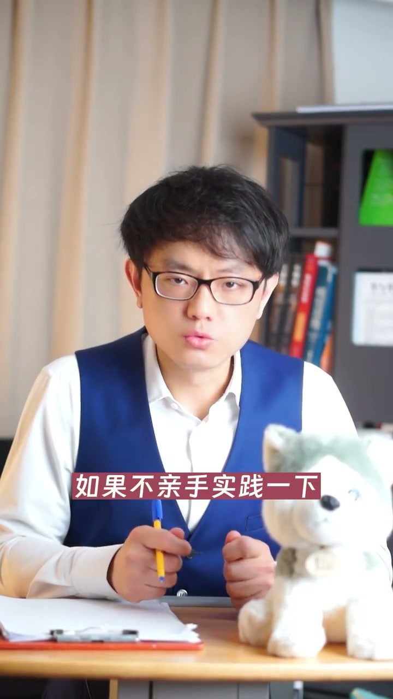
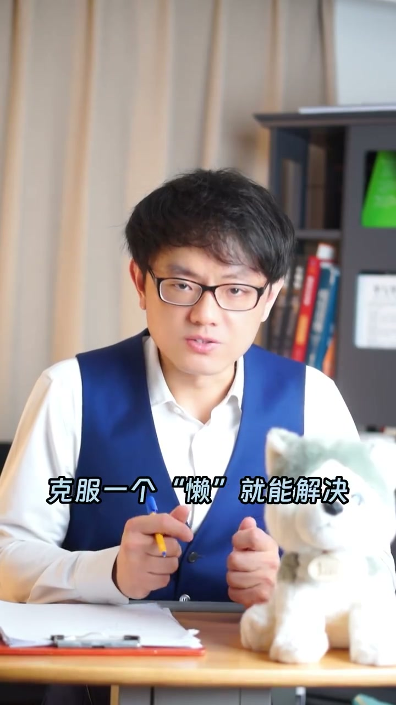
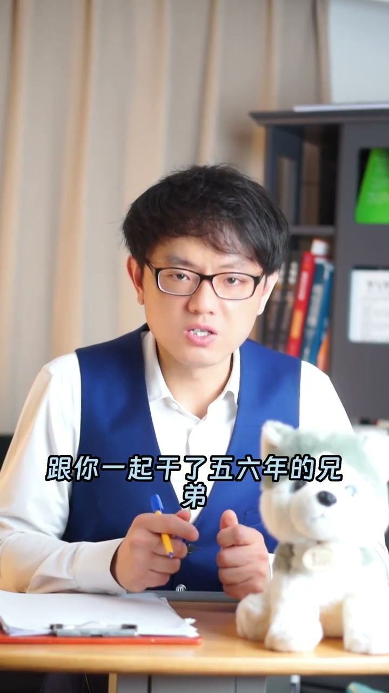
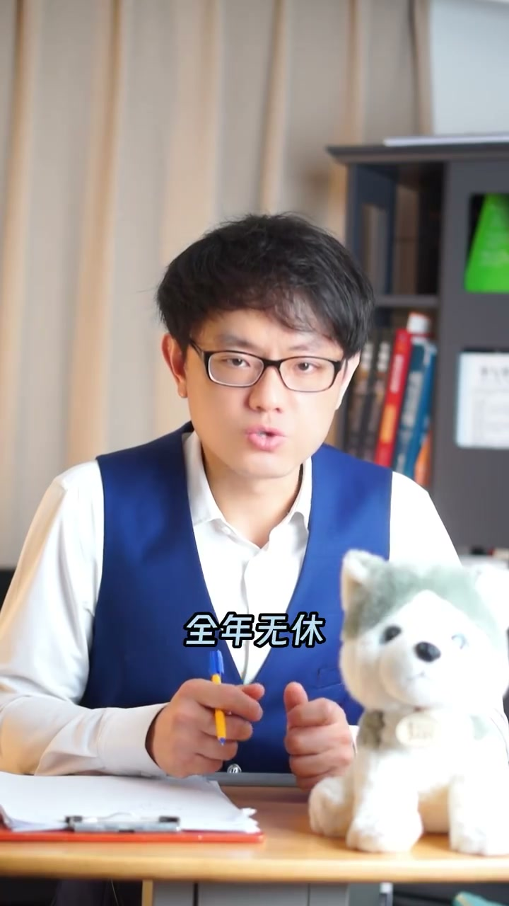
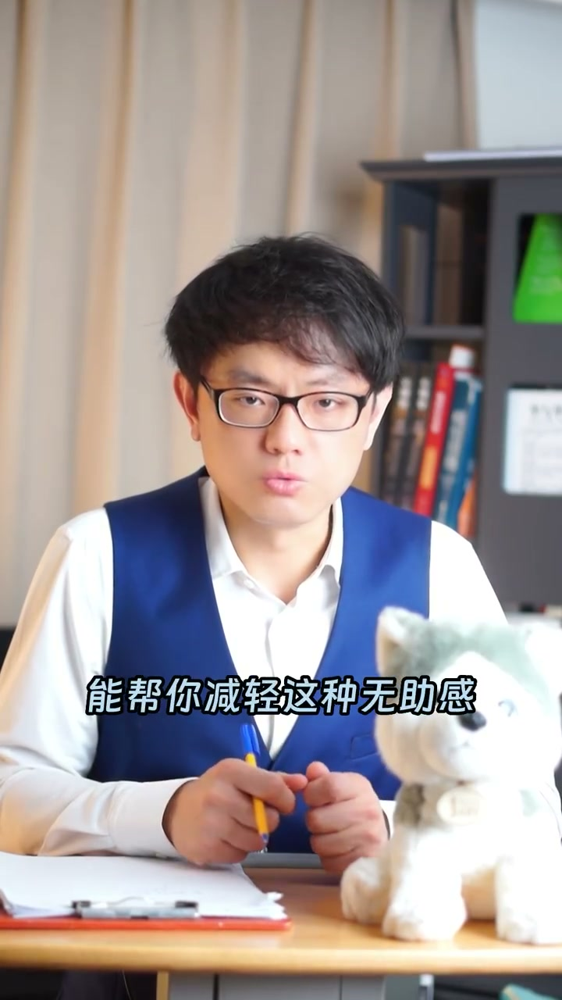

内容要点
一段 1 分半的认知成长视频：三年前讲者会脱口而出，读书给不了你的是「实践的感悟」；深度思考后他发现还有别的东西——知与行之间隔着一个叫「场景」的东西。无风险的场景里做不到只是懒，但高风险场景（做错就断腿、失房、兄弟散伙）不是克服懒惰能解决的。书给不了你面临绝望时的真实感受和做艰难决定时的心态；书里的世界是安全的，现实是残酷的，逆境下的表现才是把人与芸芸众生区别开来的标志。
知识结构
读再多书，不亲手实践还是等于不知道；读书无法给到你的，是实践的感悟。深度思考后才发现：知和行之间，还有一个叫「场景」的东西。
场景没风险时，知道做不到就是懒——下班累死，看书还是追热播剧，克服懒字就行。但高风险场景（像《拆弹专家》那样被炸断腿、抵押房产被银行收走全家露宿街头、兄弟被迫散伙自谋出路）不是克服懒惰能解决的。
书给不了面临绝望时的真实感受和做艰难决定时的心态。书里的世界是安全的，现实是残酷的，有些苦只能自己扛。身处困境时告诉自己这是天降大任前的考验——此时书读得多的人也没有优势，你在逆境下的表现才把人与芸芸众生区别开。
读书给不了你的是实践的感悟、高风险场景下的抉择心态和面对绝望的真实感受：知和行之间隔着一个「场景」，书里的世界是安全的，现实是残酷的，逆境下的表现才是区分人与人的标志。
00:00-00:38知和行之间，隔着一个「场景」
开场提问：读了再多的书，也无法给到你的是什么？三年前讲者会脱口而出——书读了再多，如果不亲手实践一下，那还是等于不知道，所以读书无法给到的是实践的感悟。
深度思考后发现不对，还有其他东西：知和行之间，有一个叫「场景」的东西。
如果场景没有什么风险，知道但做不到，那其实就是懒了，没有其他理由——下班后到家累死了，看书学习还是看热播电视剧？克服一个「懒」字就能解决。但讲者强调：这个场景是有难度之分的。


00:39-01:33高风险场景不是懒能解决，逆境表现才是分水岭
想象一个知和行的场景里，做错选择就会像刘德华在电影《拆弹专家》里那样被炸断一条腿；做错选择，抵押出去的房产证就会被银行收走，全家露宿街头；做错选择，跟你一起干了五六年的兄弟就要被迫散伙、自谋出路——那就不是克服懒惰就能解决的了。
书可以给你很多道理，但唯独给不了你的是面临绝望时的真实感受，和做出艰难决定时的心态。比如每天奋斗 12 小时、全年无休却依然看不到希望，拼尽全力后依然与机会失之交臂，乃至于后来都怀疑自己的能力、后悔自己当初的选择——这些书读了再多也无法给到你。
书里的世界是安全的，现实的世界是残酷的。生命中有很多属于自己的苦，只能自己扛，没有任何一本书能帮你减轻这种无助感。身处困境时告诉自己：这是上天降大任于你之前给你的考验。此时比你读了更多书的人，他们也没有任何优势——你在逆境下的表现，才是把你和其他芸芸众生区别出来的标志。



完整转录（53段）
以下文本由 Whisper medium 模型自动转录，可能存在少量识别误差，已尽可能修正。
读了再多的书也无法给到你的是什么
要是三年前问我这个问题
我会脱口而出
书读了再多
如果不亲手实践一下
那还是等于不知道
所以读书无法给到你的是实践的感悟
后来我深度思考发现不对
还有其他东西
知和形之间有一个叫做场景的东西
如果场景没有什么风险
知道但做不到
那其实就是懒了
没其他理由的
下班后到家累死了
看书学习还是看热播电视剧
克服一个懒字就能解决
但是这个场景是有难度之分
想象一个知和形的场景里
如果做错选择
就会像刘德华在电影《拆摊专家》那样
被炸断一条腿
如果做错选择
抵押出去的房产证就会被银行收走
全家露出街头
如果做错选择
跟你一起干了五六年的兄弟
就要被迫散伙自谋出路
那就不是克服懒惰就能解决的
书可以给你很多道理
但唯独给不了你的是
面临绝望时的真实感受
和做出艰难决定时的心态
比如每天奋斗12小时
全年无休却依然看不到希望
拼尽全力后
依然与机会十字交臂
乃至于后来都怀疑自己的能力
后悔自己当初的选择
这些书读了再多也无法给到你
书里的世界是安全的
现实的世界是残酷的
你会发现生命中有很多
读属于自己的七苦无遗
只能自己扛
没有任何一本书能帮你减轻这种无助感
当你身处困境时
你就告诉自己
这是上天降大人前给你的考验
此时比你多了更多书的人
他们也没有任何优势
你在逆境下的表现
才是把你和其他云音终身区别出来的标志